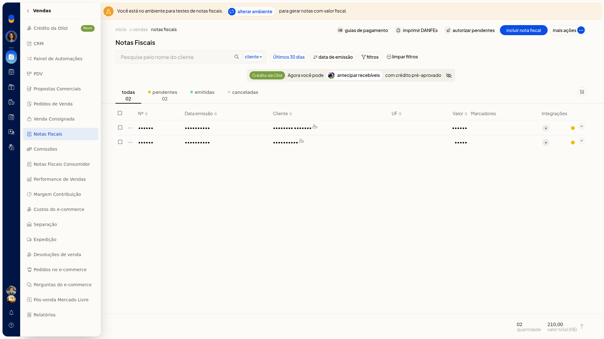
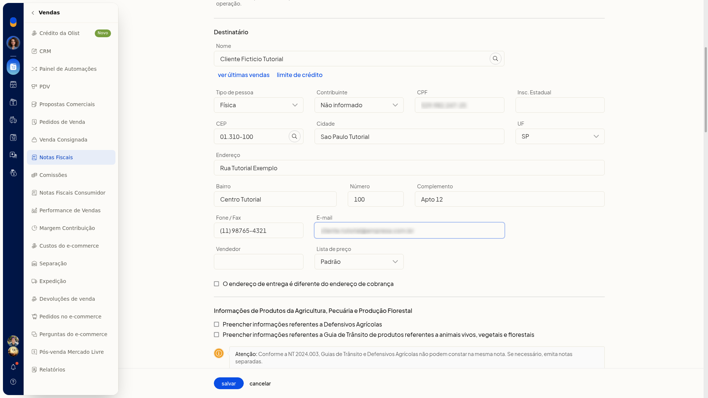
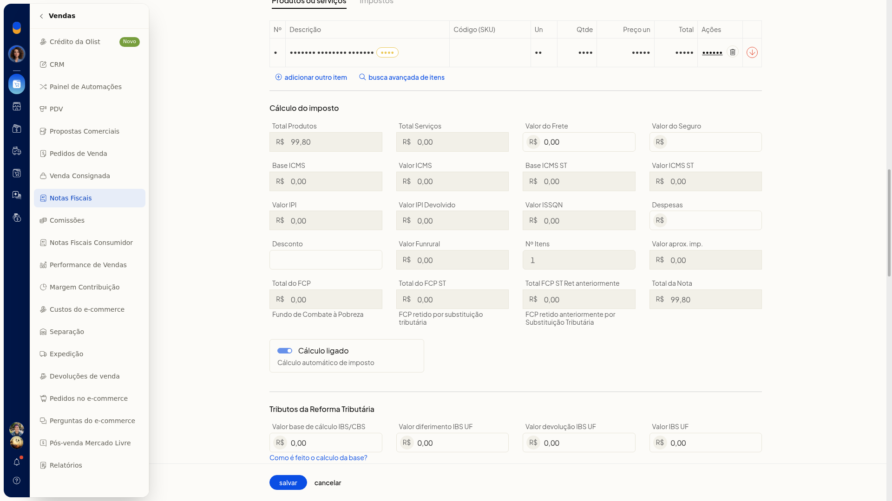
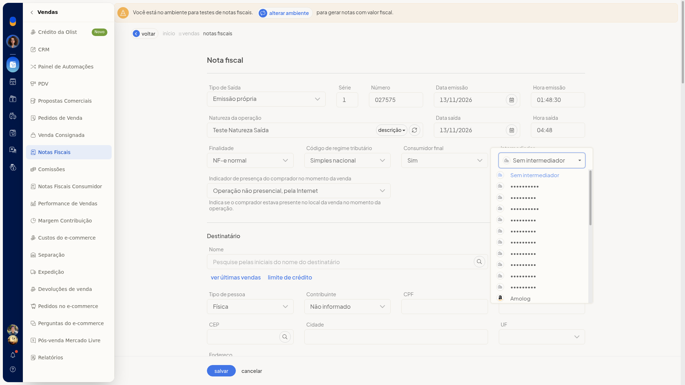
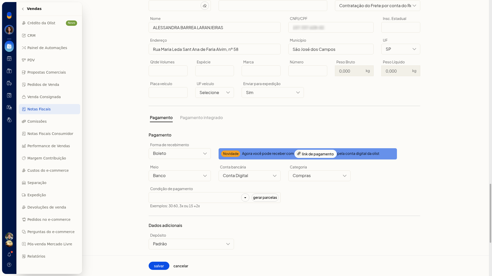
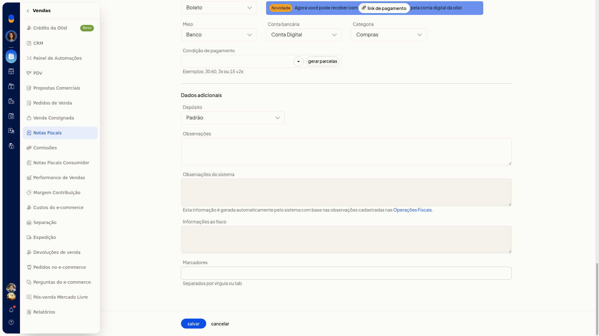

Incluir nota fiscal manualmente
No ERP da Olist, você inclui uma nota fiscal manualmente quando a venda não parte de um pedido. No formulário, você escolhe o tipo de saída e a finalidade, informa o destinatário e os itens e completa intermediador, transporte e pagamento.
A inclusão fica em Vendas > Notas Fiscais.
Importante
- Defensivos agrícolas e a guia de trânsito de produtos referentes a animais vivos, vegetais e florestais não podem constar na mesma nota.
Instruções
-
Acesse Vendas > Notas Fiscais.
-
Clique em Incluir nota fiscal.

-
Revise o que já vem selecionado: Tipo de Saída em Emissão própria, Finalidade em NF-e normal, Código de regime tributário em Simples nacional, Consumidor final em Sim e Indicador de presença do comprador no momento da venda em Operação não presencial, pela Internet.
-
Confira também Tipo de pessoa em Física, Contribuinte em Não informado e Lista de preço em Padrão. Série, Número, Data emissão, Hora emissão, Natureza da operação, Data saída e Hora saída já vêm preenchidos. Se alterar uma data, use o formato dd/mm/aaaa. Cálculo automático de imposto vem marcado.

-
Informe o destinatário em Nome, Tipo de pessoa, Contribuinte, CPF, Insc. Estadual, CEP, Cidade, UF, Endereço, Bairro, Número, Complemento, Fone / Fax e E-mail.
-
Preencha Vendedor, se precisar, e marque O endereço de entrega é diferente do endereço de cobrança quando a entrega não for no endereço de cobrança.

-
Inclua o item com Produto, UN, Qtde e Preço un. Com Cálculo automático de imposto marcado, os totais de imposto são calculados na tela.

-
Em Intermediador, mantenha Sem intermediador ou selecione um intermediador já cadastrado. Para cadastrar outro, clique em Adicionar intermediador.

-
Ajuste o transporte, se precisar, em Forma de envio, Forma de frete, Código de rastreamento e URL de rastreamento. Forma de envio lista as formas configuradas na conta. A URL de rastreamento é gerada ao concluir a expedição.
-
Se for lançar o pagamento, use gerar parcelas ou link de pagamento. Na seção de dados adicionais, use Preencher informações referentes a Defensivos Agrícolas ou Preencher informações referentes a Guia de Trânsito de produtos referentes a animais vivos, vegetais e florestais somente quando a nota exigir. A nota fica preenchida na tela, com os totais recalculados, e ainda não é gravada. Cancelar volta à lista sem gravar.


Informações adicionais
Os campos do formulário de inclusão não são obrigatórios.
Opções do cabeçalho
- Tipo de Saída: Emissão própria, Exportação, Emitida por terceiros e XML de NFe.
- Finalidade: NF-e normal, NF-e complementar, NF-e de ajuste, Devolução, Nota de débito, NFe com cupom referenciado, NFe com chave de acesso referenciada e NF-e normal - pagamento antecipado.
- Código de regime tributário: Simples nacional, Simples nacional - excesso de sublimite de receita bruta, Regime normal e Microempreendedor Individual (MEI).
- Consumidor final: Selecione, Sim e Não.
- Tipo de pessoa: Jurídica, Física, Estrangeiro e Estrangeiro no Brasil.
- Contribuinte: Não informado; Contribuinte ICMS; Contribuinte isento de Inscrição no cadastro de Contribuintes do ICMS; Não Contribuinte, que pode ou não possuir Inscrição Estadual no Cadastro de Contribuintes do ICMS.
- Lista de preço: lista as tabelas cadastradas na conta. A opção exibida por padrão é Padrão.
Presença do comprador
Indicador de presença do comprador no momento da venda indica se o comprador estava presente no local da venda no momento da operação. As opções são:
- Não se aplica (por exemplo, Nota Fiscal complementar ou de ajuste)
- Operação presencial
- Operação não presencial, pela Internet
- Operação não presencial, Teleatendimento
- Operação presencial, fora do estabelecimento
- Operação não presencial, outros